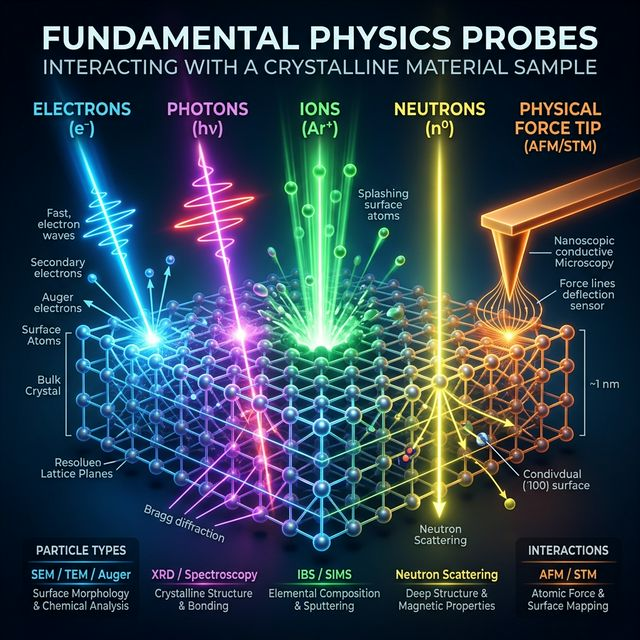
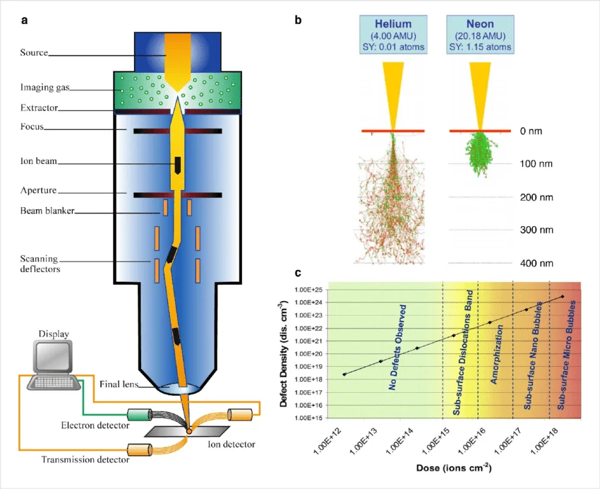

Machine Learning in Materials Processing & Characterization
Unit 2: Physics of Data Formation
FAU Erlangen-Nürnberg


01. From Physical Sensing to ML
- How does a material property become a data point?
- Transition from physical process \(\xi(t)\) to digital value \(x_i\).
- Understanding the physics of sensing is crucial for selecting appropriate ML models (priors).
- Physics of Sensing: From photons to digits.
01b. Learning Outcomes
Prerequisite (MFML Unit 2): feature matrix \(\mathbf{X}\), SVD, PCA, scree plots, standardization, low-rank approximation, eigen-microstructures.
By the end of this unit you can:
- Describe the measurement chain from physical state to digital value.
- Apply the Nyquist–Shannon theorem to assess sampling adequacy and recognize aliasing artifacts.
- Match physical noise processes to the right likelihood / loss function (Gaussian→MSE, Poisson→Poisson NLL, Weibull→reliability).
- Distinguish aleatory from epistemic uncertainty and decide when to collect more data.
- Read detector moments (mean, variance, skew, kurtosis) as physical diagnostics rather than abstract statistics.
- Interpret PCA components in terms of materials physics — and recognize when a linear basis fails.
- Apply K-means and t-SNE for unsupervised clustering and visualization in the PCA-reduced space.
02. The Five Fundamental Probes
To understand data, we first ask: What is probing the sample?
- Electrons: Charged, low mass. High spatial resolution.
- Photons: Massless, uncharged. Penetrating, probes bonds & crystals.
- Ions: Massive, charged. Huge momentum transfer (sputtering).
- Neutrons: Massive, uncharged. Deep nuclear penetration.
- Physical Forces: Van der Waals, Pauli repulsion, tunneling (macroscopic/nanoscale probes).
- The choice of probe dictates the physical interaction, which determines the resulting data format (2D projection vs 3D volume, surface vs bulk).

03. Electron Interactions
Physics of the Probe:
- Electrons are negatively charged and have low mass.
- Strong Coulomb interactions with both nucleus and electron cloud.
- High interaction cross-section = low penetration depth (surface sensitive).
- Easily focused using magnetic lenses to sub-Ångström spot sizes.
Information & Data Format:
- Elastic Scattering (Diffraction): Provides crystal structure (e.g., SAED).
- Inelastic Scattering (Energy Loss): Yields chemical/bonding information (EELS/EDXS).
- Data: High-resolution 2D real-space images (SEM/STEM), 2D reciprocal-space diffractions, or 1D spectra.

04. Photon Interactions (Vis & X-Ray)
Physics of the Probe:
- Electromagnetic waves (\(E=h\nu\)). They interact primarily with the electron cloud.
- Visible/IR: Low energy. Probes molecular bonds, vibrations, and bandgaps (Raman, FTIR).
- X-rays: High energy. Probes core-level electrons and long-range crystal periodicity (XRD, XPS). Highly penetrating.
Information & Data Format:
- Transverse wave-nature means no magnetic lenses \(\to\) harder to form sub-nm real-space probes compared to electrons.
- Excels at yielding bulk, macroscopic averages.
- Data: Often collected as 1D spectra (Intensity vs. Energy/Wavenumber/\(2\theta\)) or 2D diffraction spots.

Electromagnetic spectrum
05. Massive Particles: Ions & Neutrons
Ions:
- Massive, charged (e.g., Ga\(^+\), He\(^+\)).
- Transfer huge momentum (nuclear stopping).
- Used for milling/sputtering (FIB) and direct mass identification via Time-of-Flight (Atom Probe Tomography).
- Data: Focuses on direct 3D atomic reconstructions mapping isotopic mass to \((x,y,z)\) coordinates.

Neutrons:
- Massive, neutral.
- Interact only with the nucleus (strong force) and magnetic spin.
- Extremely deep penetration (can probe inside bulk steel parts).
- Data: Isotope-specific scattering (can easily distinguish Hydrogen from Deuterium). Magnetic structure diffraction.
06. Physical Probes & Forces
Physics of the Probe:
- A physical, nanoscopic tip interacts directly with the sample surface.
- Relies on fundamental forces: Van der Waals, electrostatic, or Pauli exclusion (repulsion).
- In Scanning Tunneling Microscopy (STM), it measures quantum electron tunneling probability.
Information & Data Format:
- Atomic Force Microscopy (AFM): Measures cantilever deflection via laser tracking.
- Yields true 3D spatial height maps (topography) of the surface, rather than a 2D projection.
- Data: 2D Topographic maps \(Z(X,Y)\), or Force-Distance curves measuring mechanical stiffness/adhesion.

07. Sensors as Transducers
- Sensors convert physical stimuli into electrical/digital signals.
- Stimuli: Photon intensity, electron scattering, temperature, stress.
- The mapping \(f: \text{Physical State} \to \text{Digital Representation}\).
- Every sensor has a characteristic transfer function and noise profile.
08. Example: CMOS Detectors for Optical Imaging
- Principle: Photons generate electron-hole pairs in a semiconductor.
- Architecture: Active Pixel Sensor (APS) – each pixel has its own amplifier.
- Transfer Function: Photons \(\rightarrow\) Charge \(\rightarrow\) Voltage \(\rightarrow\) Digital Number.
- Characteristics:
- High frame rates and parallel readout.
- Susceptible to readout noise and dark current (thermal electrons).
- High quantum efficiency for visible light.
09. Example: Scintillation Detectors (Indirect)
- Targets: High-energy X-rays or fast electrons (e.g., in EM).
- Two-Step Process:
- Incident particle hits a scintillator (e.g., YAG, CsI).
- Scintillator emits a flash of visible light.
- Light is collected by a standard CMOS/CCD.
- Trade-offs:
- Pro: Protects the silicon sensor from radiation damage.
- Con: The generated light scatters within the scintillator crystal.
- Result: Broad Point Spread Function (PSF) \(\to\) Loss of spatial resolution (blurring).
10. Example: Direct Detectors
- Targets: X-rays and high-energy electrons (e.g., Cryo-EM).
- Direct Process: Incident particle enters a thinned semiconductor layer directly.
- Physics: One incident high-energy particle generates a massive electron-hole cascade.
- Key Advantages:
- No scintillator intermediate \(\to\) no optical scattering.
- Extremely sharp Point Spread Function (PSF).
- High SNR allows precise single-particle counting with near-zero noise.

11. Spectrometers: Energy Resolution in EDXS
- Principle (Energy \(\to\) Charge):
- An X-ray photon strikes a semiconductor detector (e.g., Silicon Drift Detector).
- It creates \(N\) electron-hole pairs proportional to its energy: \(N = E / \epsilon\).
- Example: A 1 keV X-ray creates \(\sim 260\) pairs in Si (\(\epsilon \approx 3.8\) eV).
- Measurement:
- The total collected charge is converted to a voltage pulse.
- Pulse height \(\propto\) incoming X-ray energy.
- Resolution Limits:
- Governed by counting statistics (Fano noise) and electronic readout noise.
- Typical energy resolution is around \(\sim 130\) eV.
12. Spectrometers: Energy Resolution in EELS
- Principle (Energy \(\to\) Space):
- Fast electrons pass through the sample, undergoing inelastic scattering (losing energy).
- A magnetic prism then bends the electron trajectories (Lorentz force).
- Slower (energy-loss) electrons are bent slightly more than faster (zero-loss) ones.
- Measurement:
- The magnetic prism spatially disperses the electrons across a detector (e.g., CMOS or Direct Detector).
- Pixel position on the detector directly maps to energy loss \(\Delta E\).
- Resolution Limits:
- Governed by the energy spread of the electron gun (e.g., Cold FEG restricts spread) and spectrometer aberrations.
- State-of-the-art can achieve \(\sim 10\) meV resolution!
13. Continuous to Discrete Mapping
- Sampling: Measuring at discrete points \(\tau_i\).
- Neuer’s Sampling formula (Neuer et al. 2024): \[x_i = \xi(\tau_i + \delta t) + u_x\]
- \(\xi\): Underlying physical truth.
- \(\delta t\): Timing jitter/uncertainty.
- \(u_x\): Amplitude noise/uncertainty.
14. Temporal and Spatial Sampling
In Characterization:
- Pixel pitch (spatial resolution)
- Frame rate (temporal resolution)
- Energy binning (spectral resolution)
- Sampling Rate \(\nu_S = 1/\Delta t\).
- Spatial frequency \(k = 1/\Delta x\).
15. The Nyquist-Shannon Theorem
To fully capture a signal with maximum frequency \(\nu_{max}\), we must sample at least twice as fast: \[\nu_S \ge 2\nu_{max}\]
Nyquist Frequency: \(\nu_{Nyquist} = \frac{1}{2} \nu_S\).
Frequencies above \(\nu_{Nyquist}\) cannot be resolved and cause artifacts.
16. Aliasing - When Resolution Fails
- If \(\nu_S < 2\nu_{max}\), high-frequency components are “folded” into lower frequencies.
- Example: Moiré patterns in TEM when grid resolution and crystal lattice interfere.
- Example: Wagon-wheel effect in high-speed video.
17. Physical Resolution Limits
- Optical/Electron diffraction limits (Abbe’s limit).
- Point Spread Function (PSF): The response of an imaging system to a point source.
- Measured image = True Object \(\ast\) PSF + Noise.
- Blurring as a physical prior for convolutional models.
18. Jitter and Temporal Resolution
- Jitter (\(\delta t\)) in our “clock” during sampling.
- Leads to phase noise and uncertainty in transient measurements.
- Crucial in pump-probe experiments and high-speed process monitoring.
19. Finite Rate of Innovation (FRI)
- If we have prior knowledge of the signal structure (e.g., sum of \(K\) spikes), we can sample below Nyquist.
- “Sparsity” in the physical process enables compressed sensing.
- Materials data is often sparse (e.g., atoms in vacuum, defects in a crystal).
20. Sparse Recovery Example (FISTA)
- Compressed Sensing: Recovering a signal from highly incomplete measurements.
- We measure \(\mathbf{y} = \mathbf{A}\mathbf{x} + \mathbf{n}\) with \(M \ll N\).
- L1-Minimization promotes sparsity: \[\hat{\mathbf{x}} = \arg\min_{\mathbf{x}} \frac{1}{2} \|\mathbf{y} - \mathbf{A}\mathbf{x}\|_2^2 + \lambda \|\mathbf{x}\|_1\]
- FISTA: Accelerated proximal gradient descent method to solve this non-smooth problem efficiently.
21. The FISTA Algorithm (Mathematics)
- Objective: Minimize a composite function \(F(\mathbf{x}) = f(\mathbf{x}) + g(\mathbf{x})\)
- Smooth data-fidelity: \(f(\mathbf{x}) = \frac{1}{2}\|\mathbf{y} - \mathbf{A}\mathbf{x}\|_2^2 \implies \nabla f(\mathbf{x}) = \mathbf{A}^T(\mathbf{A}\mathbf{x} - \mathbf{y})\)
- Non-smooth sparsity prior: \(g(\mathbf{x}) = \lambda \|\mathbf{x}\|_1\)
- Proximal Gradient Step (ISTA):
- Gradient Step: \(\mathbf{v}_k = \mathbf{x}_{k-1} - \gamma \nabla f(\mathbf{x}_{k-1})\)
- Proximal Step (Soft-Shrinkage): Evaluates \(\text{prox}_{\gamma g}(\mathbf{v}_k)\) \[\mathbf{x}_k = \text{sign}(\mathbf{v}_k) \max(|\mathbf{v}_k| - \gamma\lambda, 0)\]
- Nesterov Acceleration (FISTA):
- Updates the evaluation point using momentum to accelerate convergence from \(\mathcal{O}(1/k)\) to \(\mathcal{O}(1/k^2)\):
- \(\mathbf{y}_k = \mathbf{x}_k + \frac{t_k - 1}{t_{k+1}}(\mathbf{x}_k - \mathbf{x}_{k-1})\)
- where \(t_{k+1} = \frac{1 + \sqrt{1 + 4t_k^2}}{2}\)
22. Modeling Sensor Noise
- Measurements as Random Variables:
- A digital measurement \(x_i\) is not a deterministic value.
- Due to physical fluctuations, \(x_i\) is drawn from a probability distribution \(P(x_i | \lambda_i)\).
- \(\lambda_i\): The “true” underlying physical state (e.g., predicted by a model).
- Common Noise Models:
- Gaussian (Normal) Noise: Thermal fluctuations in electronics (readout noise).
- Poisson Noise: Discrete counting statistics of particles (shot noise for photons/electrons).
23. Noise as a Physical Process
- Sensors are stochastic processes.
- Thermal Noise (Johnson-Nyquist): Random electron motion.
- Shot Noise: Counting statistics for photons/electrons (Poisson process).
- Noise is not just “error”; it follows physical laws.
24. Aleatory vs. Epistemic Uncertainty (Neuer et al. 2024)
Aleatory (Statistical):
- Inherent randomness (dice).
- Cannot be reduced by more data.
- e.g., thermal noise.
Epistemic (Knowledge-based):
- From “lack of knowledge.”
- Can be reduced by more data/better models.
- e.g., calibration errors.
25. Physical Noise Models
- Gaussian: Thermal/Electronic noise.
- Poisson: Shot noise in EM/X-ray (counting).
- Weibull: Failure and defect statistics in materials.
25b. The Weibull Distribution: Failure & Strength Statistics
\[p(x; k, \lambda) = \frac{k}{\lambda}\!\left(\frac{x}{\lambda}\right)^{k-1}\!e^{-(x/\lambda)^k}\]
- Heavily skewed (not bell-shaped).
- \(k\): shape — controls skewness and failure mechanism.
- \(\lambda\): scale — characteristic life / strength.
- Captures both early failures (\(k<1\)) and wear-out (\(k>1\)).
Materials use cases:
- Fatigue life prediction.
- Ceramic strength statistics.
- Reliability engineering & time-to-failure.
- Defect density in thin films.
ML consequence: Using MSE on Weibull-distributed targets gives wrong confidence intervals. Use a Weibull NLL or transform to log-space.
25c. Weibull Distribution: Interactive Explorer
- Drag \(k\) (shape) and \(\lambda\) (scale) and watch the PDF, CDF and hazard \(h(x)\) change.
- Regime banner tells you which failure mode:
- \(k<1\) → infant mortality,
- \(k\approx 1\) → random,
- \(k>1\) → wear-out,
- \(k\approx 3.4\) → near-Gaussian.
- Key points on the PDF: mean, median, mode — note how they separate with skewness.
26. From Gaussian Noise to MSE Loss
- Gaussian Likelihood: \[P(x_i | \hat{x}_i) = \frac{1}{\sqrt{2\pi\sigma^2}} \exp\left( -\frac{(x_i - \hat{x}_i)^2}{2\sigma^2} \right)\]
- \(x_i\): Noisy observation.
- \(\hat{x}_i\): Model prediction.
- Negative Log-Likelihood (NLL): \[-\log P(x_i | \hat{x}_i) \propto (x_i - \hat{x}_i)^2 + C\]
- Result: Assuming constant variance \(\sigma^2\), minimizing NLL is exactly equivalent to minimizing the Mean Squared Error (MSE).
- Takeaway: MSE assumes your data has Gaussian noise!
27. From Poisson Noise to Poisson Loss
- Poisson Likelihood (Shot Noise): \[P(x_i | \hat{x}_i) = \frac{\hat{x}_i^{x_i} e^{-\hat{x}_i}}{x_i!}\]
- \(x_i\): Observed particle count (integer).
- \(\hat{x}_i\): Expected count rate.
- Negative Log-Likelihood (NLL): \[-\log P(x_i | \hat{x}_i) = \hat{x}_i - x_i \log(\hat{x}_i) + \log(x_i!)\]
- Poisson Loss: Dropping the \(\log(x_i!)\) term yields: \[\mathcal{L} = \hat{x}_i - x_i \log(\hat{x}_i)\]
- Use Case: Essential for low-dose microscopy, astronomy, and spectroscopy.
28. Bayesian Inference & MAP Estimation
- Bayes’ Theorem: Inferring the true state model \(\mathbf{\theta}\) from data \(\mathbf{X}\): \[P(\mathbf{\theta} | \mathbf{X}) = \frac{P(\mathbf{X} | \mathbf{\theta}) P(\mathbf{\theta})}{P(\mathbf{X})}\]
- Maximum A Posteriori (MAP) Estimation: \[\hat{\mathbf{\theta}}_{\text{MAP}} = \arg\max_{\mathbf{\theta}} \left[ \log P(\mathbf{X} | \mathbf{\theta}) + \log P(\mathbf{\theta}) \right]\]
- Connection to Machine Learning:
- \(P(\mathbf{X} | \mathbf{\theta})\) is the Likelihood \(\rightarrow\) Minimizing Negative Log-Likelihood gives our Loss Function.
- \(P(\mathbf{\theta})\) is the Prior \(\rightarrow\) Provides Regularization (e.g., L2 weight decay is a Gaussian prior).
29. Recap: Linear Algebra Toolkit (MFML Unit 2)
You already have the mathematical machinery:
- Feature matrix \(\mathbf{X}\) (\(m\) samples × \(n\) features).
- Covariance matrix \(\mathbf{C} = \tfrac{1}{N-1}\bar{\mathbf{X}}^{T}\bar{\mathbf{X}}\) — symmetric, PSD.
- SVD: \(\mathbf{X} = \mathbf{U}\mathbf{\Sigma}\mathbf{V}^{T}\) — universal factorization.
- PCA = SVD on centered data; maximizes retained variance; scree plot for choosing \(k\).
- Low-rank truncation \(\mathbf{X}_k = \mathbf{U}_k\mathbf{\Sigma}_k\mathbf{V}_k^{T}\) — compression & denoising.
- Standardization / whitening before PCA when units / scales differ.
- Eigen-microstructures as a linear basis for image data.
In this unit we focus on the physics sitting on top of that math:
- Which physical modes do PCs correspond to?
- How does the noise model (Poisson, Gaussian, Weibull) interact with PCA?
- When does a linear basis fail, and why?
- What do we do with the reduced representation (clustering, visualization)?
See MFML Unit 2 for derivations; here we apply them.
30. Moments in Detector Language
Mean — the signal level: \[\mu = E[x] = \sum_i x_i\, p(x_i)\]
Variance — the noise level: \[\sigma^2 = E\!\left[(x - \mu)^2\right]\]
For many detectors \(\text{SNR} \approx \mu / \sigma\).
Noise-model constraints on moments:
- Poisson shot noise: \(\sigma^2 = \mu\) — variance is not a free parameter.
- Gaussian thermal noise: \(\sigma^2\) independent of \(\mu\) — two distinct parameters.
- Weibull failure: heavy skew; moments are non-trivial functions of \((k, \lambda)\).
31. Higher Moments as Detector Diagnostics
- Skewness: asymmetry — non-zero for Poisson at low counts and for Weibull failure data.
- Kurtosis: tail weight — high when cosmic-ray hits or ion bursts create spikes.
- Practical use: inspect residual histograms.
- Fat tails → outliers → use a Huber / robust loss.
- Skew → wrong noise model → switch the likelihood.
32. Interpreting PCA Components in Materials
PCA components often correspond to physical modes:
- PC 1: overall intensity — thickness / density variation.
- PC 2: primary chemical shift, grain rotation, or phase onset.
- PC 3: secondary phase appearance or defect signature.
Warning: PCA components are mathematical (orthogonal), not physical. Two physical effects can be mixed into one PC, or one effect can be spread across several PCs — always validate against domain knowledge.
When PCA fails: rotations, deformations and phase transitions lie on non-linear manifolds — consider NMF, autoencoders, or Kernel PCA (see MFML Unit 2 / 9).
33. Case Study: Time Series (McClarren) (McClarren 2021)
Hohlraum laser pulse simulation:
- 30 time-point pulse profiles → 2 principal components.
- PC 1 ≈ overall pulse scale / height.
- PC 2 ≈ plateau timing / rise time.
- Captures 83 % of variance with 2 variables.
- A 30-dim physical process collapsed to a 2-D diagnostic plane.
- Each PC has a clear physical meaning — rare for PCA, but achievable for smooth time series.
- Models, experiments, and uncertainty bounds can all be tracked in the same PC plane.
34. Case Study: Hyperspectral Imaging (McClarren 2021)
- 2051 wavelengths per pixel → 4 principal components.
- Identifies distressed vs. healthy vegetation from non-visible spectral signatures.
- Same workflow applies to EDS / EELS hyperspectral data in materials: per-pixel spectra → few-component decomposition → phase maps.
35. K-means Clustering
- Unsupervised: find \(K\) natural groupings in the data.
- Minimize the within-cluster sum of squares:
\[L = \sum_{k=1}^{K} \sum_{\mathbf{x}_i \in C_k} \|\mathbf{x}_i - \boldsymbol{\mu}_k\|^2\]
- Initialize \(K\) centroids → assign points → update centroids → repeat.
- Simple, fast, but requires choosing \(K\) in advance.
- Materials context: automatic phase mapping in EDS / EELS hyperspectral datasets.
35b. Choosing \(K\): The Elbow Method
- Plot the within-cluster loss \(L\) versus \(K\).
- Elbow: adding more clusters yields diminishing returns.
- Mirrors the PCA scree plot in spirit.
- Alternatives: silhouette score, gap statistic.
In materials, prior knowledge often constrains \(K\):
- Expected number of phases.
- Known crystallographic classes.
- Process-set regimes.
Note
When the elbow is ambiguous, combine quantitative criteria with domain knowledge — e.g., do \(K=4\) clusters correspond to known phases?
36. t-SNE: Visualizing High-Dim Manifolds
t-Distributed Stochastic Neighbor Embedding
- Maps high-dim data to 2D/3D for human visualization.
- Preserves local structure (neighbors stay neighbors).
- Does not preserve global distances.
36b. Why the “t”? Heavy Tails for Better Separation
- High-dim: Gaussian similarities between neighbors.
- Low-dim: Student-\(t\) / Cauchy distribution (heavy tails).
- Heavy tails let dissimilar clusters spread out in 2D without crowding near clusters.
Fashion-MNIST example (McClarren 2021):
- \(28 \times 28\) pixel images → 784-D space.
- t-SNE reveals “islands” of T-shirts, shoes, dresses, …
- Structure discovered purely from pixels — no labels.
Materials analogue: apply t-SNE to a stack of micrographs and watch microstructure types separate.
Important
t-SNE is stochastic and depends on perplexity. Run it multiple times and vary perplexity before trusting any visual cluster.
37. Summary & Key Takeaways
- Sampling Physics: Nyquist, aliasing, and resolution are the physical limits of your data — no ML can recover what the sensor did not capture.
- Sensors as transducers: CMOS, scintillator, direct detector, EDXS, EELS — each has a distinctive PSF and noise fingerprint.
- Uncertainty: match the noise model (Gaussian → MSE, Poisson → NLL, Weibull → reliability) to the right loss. Separate aleatory (irreducible) from epistemic (reducible).
- Bayes’ theorem unifies physics prior + measurement likelihood → posterior — and recovers Ridge / Lasso regularization as special cases.
- Reduction (from MFML Unit 2), interpreted physically: PCA components may correspond to physical modes; validate against domain knowledge; non-linear manifolds need non-linear tools.
- Clustering & visualization: K-means (with elbow) and t-SNE (with heavy tails) uncover hidden structure — in PC space first, for robustness.

© Philipp Pelz - Machine Learning in Materials Processing & Characterization